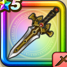

バロックエッジ
攻略班 8.0点 / ヴァイパーファングピオリムヘナトスラッシュバースト閃熱の翼撃※錬成で強化可能
くわしい特徴
【レベル別習得スキル】 Lv1【魔法戦士】すばやさ+5 Lv1ヴァイパーファング（消費MP：5）刃に猛毒を宿し敵1体に威力130%の斬撃ダメージを与えたまに猛毒を与える Lv10ピオリム（消費MP：16）使用時含む5ターンの間、仲間全員のすばやさを1段階上げる Lv15ヘナトス（消費MP：10）敵1体の攻撃力を1段階下げる Lv20ラッシュバースト（消費MP：22）敵全体にこうげき力とこうげき魔力を込めた125%のイオ属性斬撃ダメージを与える Lv30閃熱の翼撃（消費MP：25）敵単体にこうげき力とこうげき魔力を込めた220％のギラ属性斬撃ダメージを与える Lv35ゾンビ系へのダメージ+10% Lv45こうげき魔力+6 Lv50攻撃力+12錬成スキル改1鳥系へのダメージ+10%改2閃熱の翼撃改（消費MP：32）敵1体に攻・魔複合威力270%のギラ属性斬撃ダメージを与え、たまに守備力を下げる改3ゾンビ系へのダメージ+10%改4錬成ぶき特別演出解放・メガモン討伐結果発表時に特別演出が追加・武器の見た目に特別なエフェクトが追加 【限界突破スキル】 1凸スキルの斬撃・体技ダメージ+5% 2凸スキルの斬撃・体技ダメージ+5% 3凸スキルの斬撃・体技ダメージ+5% 4凸スキルの斬撃・体技ダメージ+5%